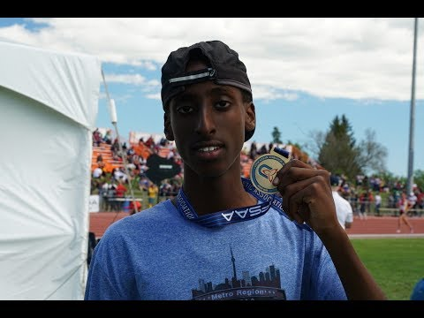
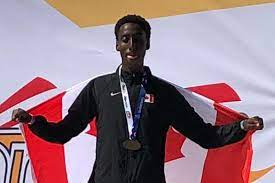
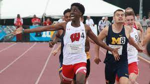

Track and field started for Abdullahi Hassan in ninth grade. During gym class, he had to complete a 400m run against his classmates. He ran a time of 56 seconds which wiped away the field. His gym teacher convinces him to join track and field, and so Abdullahi decides to do so. By the end of freshman year, he had won many championships and became the fastest 800m running in Canada within his age group.
OFSAA Championships

Sophomore year was a break-out year for Abdullahi as he made his first national team and represented Canada at The Jamaica invitational. His success continued during his Junior year when he broke three canadian records for the U18 age category. In addition, he represented Canada at the U18 NACAC championships where he finished first in the Men’s 800M.
NACAC Championships

Once Abdullahi entered College his success did not dwindle, Abdullahi is the current 800M BIG10 champion and has he had appeared at the last four national championships.
BIG10 Championships
